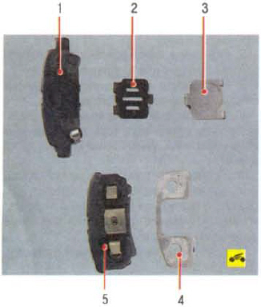
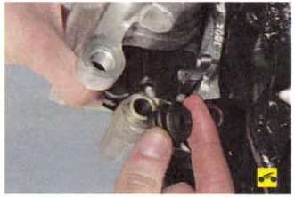

Проверяйте состояние тормозных колодок при каждом техническом обслуживании (см. «Проверка степени износа тормозных колодок, дисков и барабанов»).
Тормозные колодки необходимо заменять при износе накладок (минимально допустимая толщина фрикционных накладок - 2,0 мм), при непрочном соединении накладок с основанием, замасливании рабочих поверхностей, наличии глубоких борозд или сколов.
Примечание: На внутренних колодках тормозных механизмов задних колес установлены индикаторы износа. При достижении минимально допустимой толщины накладок индикатор износа во время торможения соприкасается с тормозным диском, вызывая скрип, сигнализирующий о наступлении предельного износа накладок тормозных колодок.
Предупреждения: Заменяйте тормозные колодки задних тормозных механизмов только комплектом из 4 шт. (по две на каждую сторону).
Перед заменой тормозных колодок проверьте уровень тормозной жидкости в бачке главного тормозного цилиндра. Если уровень близок к верхней метке, необходимо откачать часть жидкости, так как после замены изношенных колодок новыми уровень поднимется.
Вам потребуются: ключ «на 14», отвертка с плоским лезвием.
1. Снимите левое заднее колесо.
2. Ослабьте затяжку нижнего направляющего пальца...
3. ...извлеките его из суппорта...
4. ...и приподнимите суппорт вверх вместе с наружной тормозной колодкой.
5. Снимите с направляющей внутреннюю тормозную колодку...
6. ...а с суппорта наружную тормозную колодку.
 Так выглядят тормозные колодки заднего рабочего тормозного механизма:
1 - внутренняя тормозная колодка;
2 - дистанционная пластина;
3,4 - виб-рогасящие пластины;
5 - наружная колодка тормозного механизма с прижимной пружиной.
Наружная и внутренняя колодки заднего рабочего тормозного механизма различны по конструкции и невзаимозаменяемы.
 При каждой замене тормозных колодок в обязательном порядке проверяйте состояние защитных резиновых чехлов направляющих пальцев, а также легкость перемещения суппорта относительно направляющей тормозных колодок. Если перемещение затруднено, смажьте консистентной смазкой направляющий палец и его чехол.
7. Подденьте отверткой...
8. ...и снимите с направляющей колодок нижнюю и верхнюю фиксирующие пружины.
9. С помощью раздвижных пассатижей утопите поршень цилиндра.
10. Установите фиксирующие пружины, тормозные колодки и другие снятые детали в порядке, обратном снятию.
11. Аналогично замените тормозные колодки тормозного механизма правого колеса.
12. Проверьте и при необходимости восстановите уровень тормозной жидкости в бачке главного тормозного цилиндра.